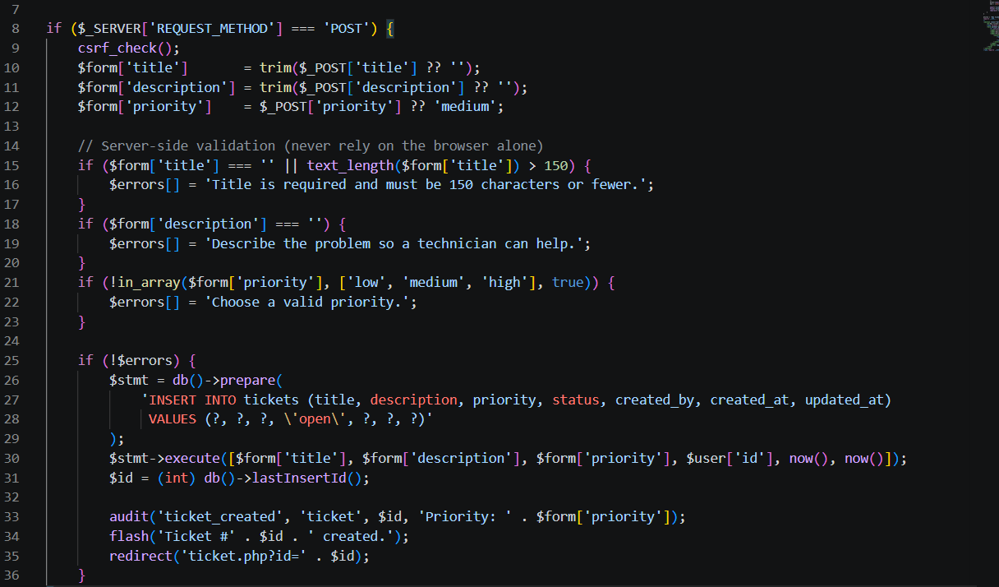
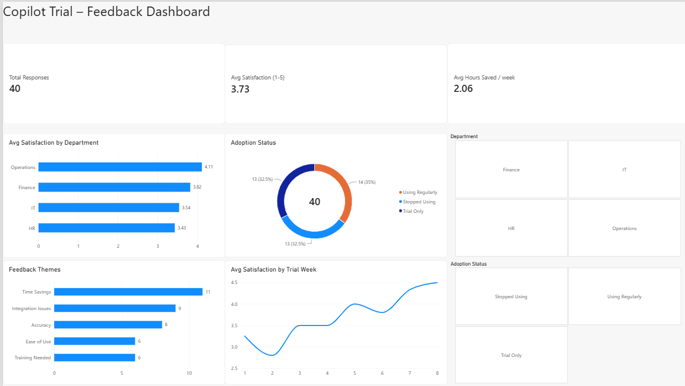
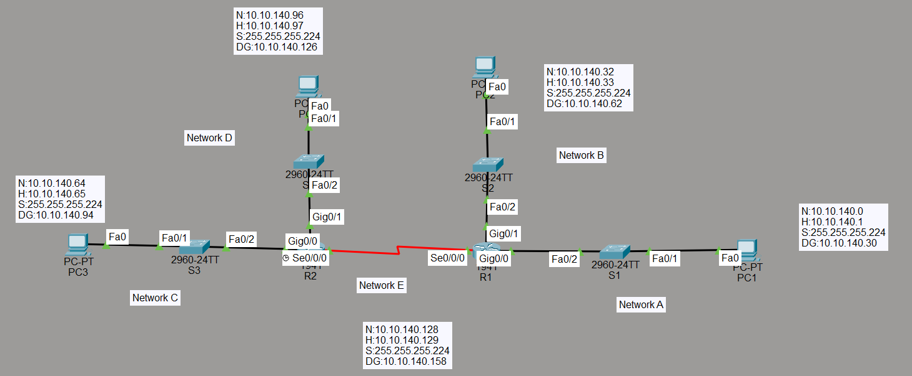
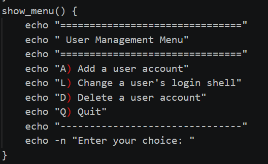
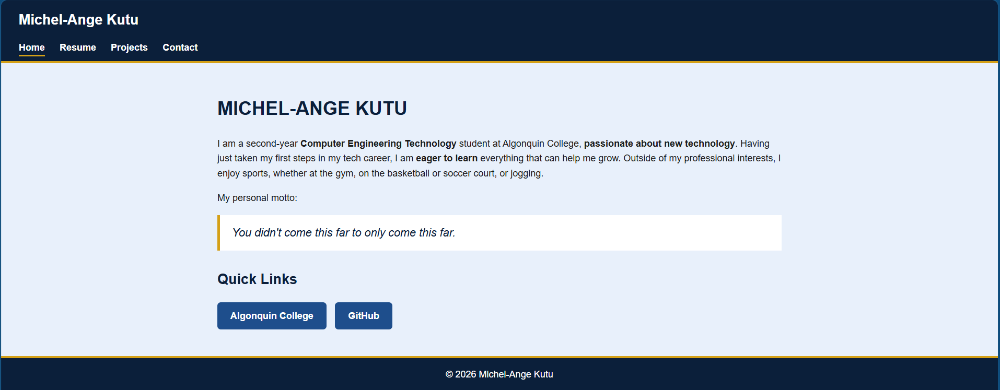

My Projects
Help Desk Ticketing & Access Management System

- Description: A web-based help desk application for logging, assigning, tracking and resolving IT support tickets, with an access-request approval workflow and a full audit log.
- Completion date: October 2026
- Technologies: PHP, SQL Server, JavaScript, HTML/CSS
Copilot Trial Feedback Dashboard

- Description: An Excel and Power BI dashboard that models how an AI Copilot trial could be evaluated, using 40 simulated survey responses. It turns raw feedback into adoption and satisfaction metrics, with filters by department and adoption status.
- Completion date: September 2026
- Technologies: Excel, Power BI
Multi-Router Network Lab

- Description: A small routed network built in Cisco Packet Tracer: two sites, each with two LANs, connected by a serial WAN link. One address block is subnetted into five /27 networks, and traffic between the sites is routed with static routes.
- Completion date: August 2026
- Technologies: Cisco routers and switches, Packet Tracer, Wireshark
Linux User Management Script

- Description: A menu-driven Bash tool for basic Linux system administration. It allows adding user accounts, changing login shells, and deleting accounts using standard Linux utilities.
- Completion date: August 2026
- Technologies: Bash, Linux user management commands (useradd, usermod, userdel)
Responsive Portfolio Website

- Description: This responsive portfolio website, built from scratch with HTML, CSS, and JavaScript. It features a CSS Grid project gallery with JavaScript category filters and a validated contact form.
- Completion date: October 2026
- Technologies: HTML, CSS, JavaScript